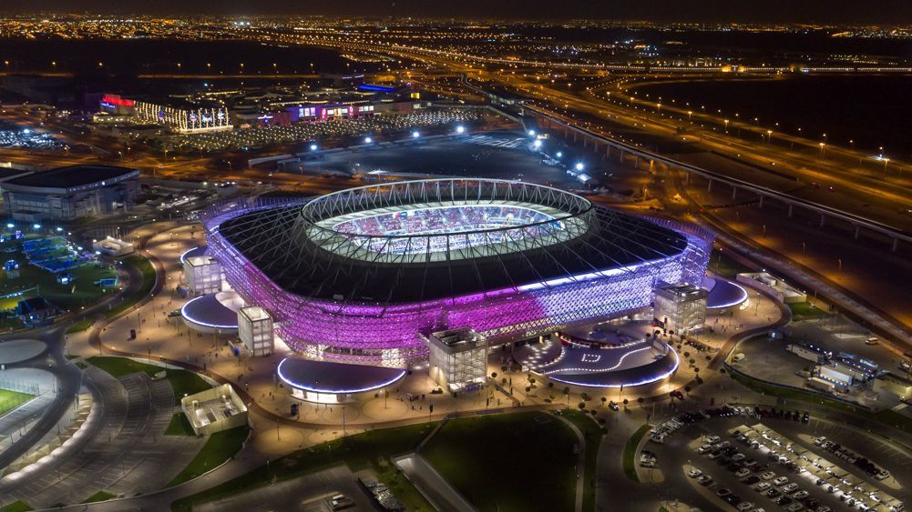

ESTADIO AHMAD BIN ALI

Estadio situado en los terrenos del antiguo estadio Ahmad bin Ali.
CAPACIDAD40.000 Espectadores.
FASES Y PARTIDOS6 x Partidos de Grupo
Octavos de Final
ESTADIO AL BAYT

Estadio ubicado en la ciudad de Al Khor, célebre por sus actividades de pesca y de buceo para encontrar perlas.
CAPACIDAD60.000 Espectadores.
FASES Y PARTIDOS6 x Partidos de Grupo Octavos de Final Cuartos de Final Semifinal
ESTADIO AL JANOUB
Estadio en la ciudad sureña de Al Wakrah, uno de los asentamientos humanos más antiguos de Catar.
CAPACIDAD40.000 Espectadores.
FASES Y PARTIDOS6 x Partidos de Grupo
Octavos de Final
ESTADIO AL THUMAMA

Estadio inspirado en la tradicional "gahfiya", ubicado a 12 km al sur de Doha.
CAPACIDAD40.000 Espectadores.
FASES Y PARTIDOS6 x Partidos de Grupo
Octavos de Final y Cuartos de Final
ESTADIO CIUDAD DE LA EDUCACIÓN
Estadio rodeado por las instituciones educativas de primer nivel de Catar.
CAPACIDAD40.000 Espectadores.
FASES Y PARTIDOS6 x Partidos de Grupo
Octavos de Final y Cuartos de Final
ESTADIO INTERNACIONAL KHALIFA
Estadio que ha sido la piedra angular de los deportes en Catar desde 1976.
CAPACIDAD40.000 Espectadores.
FASES Y PARTIDOS6 x Partidos de Grupo
Octavos de Final y Partido del Tercer Lugar
ESTADIO LUSAIL
El Estadio mas importante que albergará la final de la Copa Mundial de la FIFA Catar 2022™.
CAPACIDAD80.000 Espectadores.
FASES Y PARTIDOS6 x Partidos de Grupo
Octavos de Final, Cuartos de Final, Semifinal y Final
ESTADIO RAS ABU ABOUD

Un estadio que rinde homenaje a la tradición marítima de Catar.
CAPACIDAD40.000 Espectadores.
FASES Y PARTIDOS6 x Partidos de Grupo
Octavos de Final